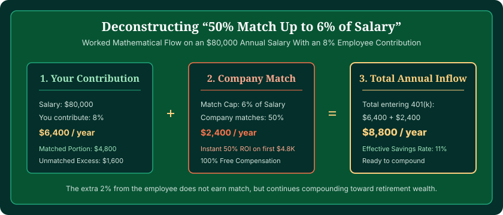
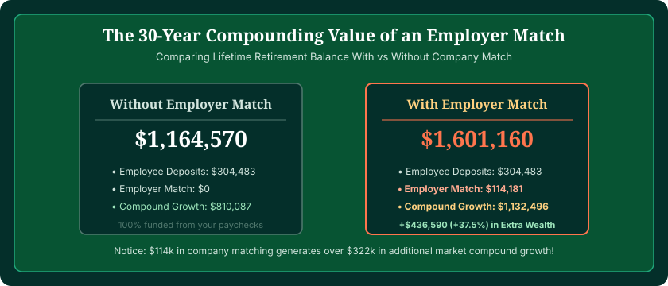

Using a 401(k) calculator with employer match reveals how powerful company contributions are in building your retirement balance. When an employer provides a match, they are giving you an immediate 50% to 100% return on your saved dollars before market growth even begins. You can calculate the exact lifetime value of your match using our interactive 401(k) Calculator with employer match.
Employer matching is often referred to by financial planners as "free money"—and mathematically, that is exactly what it is. It is part of your total workplace compensation package. If you contribute less than the amount required to capture the full match, you are effectively declining a portion of your agreed-upon salary.
In this comprehensive guide, we unpack the most common employer matching formulas, show you how to calculate your company's exact contribution, explain vesting schedules, and demonstrate the massive multi-decade compounding effect of capturing every single match dollar.
Model Your Employer Match in Real Time
Enter your salary, personal contribution percentage, and company match formula to project your lifetime matched nest egg.
Launch 401(k) Calculator →What Is a 401(k) Employer Match?
A 401(k) employer match is a formal retirement plan provision where an employer contributes additional money into an employee's 401(k) account based on the employee's personal salary deferrals.
Company matching programs are designed to incentivize employees to save for retirement. However, the employer does not simply hand you money into your checking account; they deposit it directly into your 401(k) custodian account alongside your payroll deductions, where it is immediately invested into the mutual funds or index portfolios you selected.

The Most Common 401(k) Matching Formulas Explained
While employers can design customized plan formulas, the vast majority of U.S. corporate plans use one of four standard matching structures:
1. Partial Match: 50% Up to 6% of Salary
This is the single most common matching formula in the United States. Your employer contributes $0.50 for every $1.00 you contribute, up to a maximum employee deferral of 6% of your gross salary:
- If you earn $80,000 and contribute 6% ($4,800/year), your employer contributes 3% ($2,400/year).
- Total annual 401(k) funding: $7,200 (a 9% total savings rate).
- If you contribute only 4% ($3,200), your employer contributes only 2% ($1,600), leaving $800 in free company money behind.
2. Dollar-for-Dollar Match: 100% Up to 4% or 5%
In a dollar-for-dollar formula, your employer matches 100% of your contributions up to a specific percentage cap:
- If you earn $70,000 and your plan matches 100% up to 5%, contributing 5% ($3,500) results in your employer adding another $3,500.
- Total annual 401(k) funding: $7,000 (a 10% total savings rate).
- This represents an immediate 100% overnight return on your money.
3. Tiered or Stretch Match: 100% on First 3%, 50% on Next 2%
Many "Safe Harbor" 401(k) plans utilize a tiered formula. For example, 100% match on the first 3% of compensation, plus 50% match on the next 2%:
- To capture the full match, you must contribute 5% of your salary.
- Your employer contributes: 3% (from the first tier) + 1% (50% of the next 2%) = 4% total match.
- Total annual 401(k) funding: 9% of salary.
4. Non-Elective Employer Contribution
Some employers provide a non-elective contribution (often 3% of salary) that is deposited into your 401(k) regardless of whether you contribute anything yourself. If you contribute on top of this, your total savings rate accelerates even faster.
| Formula Type | Employee Deferral | Employer Match Rate | Total Annual Savings | Immediate ROI on Employee Cash |
|---|---|---|---|---|
| 50% up to 6% | 6% of salary | 3% of salary | 9% of salary | +50% instant gain |
| 100% up to 4% | 4% of salary | 4% of salary | 8% of salary | +100% instant gain |
| 100% up to 5% | 5% of salary | 5% of salary | 10% of salary | +100% instant gain |
| Tiered (100% on 3%, 50% on 2%) | 5% of salary | 4% of salary | 9% of salary | +80% instant gain |
| 50% up to 8% | 8% of salary | 4% of salary | 12% of salary | +50% instant gain |

The Long-Term Cost of Leaving Match Money on the Table
What happens if you contribute only 3% when your employer matches up to 6%? Many savers assume they are only losing a few hundred dollars a year. However, when you factor in 20 to 30 years of compound growth, the loss is staggering.
Consider a worker earning $75,000 who misses out on a $2,250 annual employer match over a 30-year career:
- Cash match foregone: $2,250 × 30 years = $67,500
- Foregone compound investment growth (at 7% return): $215,870
- Total Retirement Wealth Lost: Over $283,000!
Leaving company match dollars unclaimed is one of the costliest financial mistakes an employee can make. Securing the full match should always be your number one financial priority, even ahead of paying down low-interest debt.

Understanding Vesting Schedules
When examining employer matching, you must pay attention to your plan's vesting schedule.
Your own payroll contributions are always 100% vested immediately—that money is yours unconditionally from day one. However, company matching dollars may be subject to a waiting period before they belong to you permanently:
- Immediate Vesting: 100% of employer matching dollars are yours the moment they hit your account. (Common in competitive tech, finance, and Safe Harbor plans).
- Cliff Vesting: You own 0% of the company match until you complete a required service period (e.g., 3 years), at which point you become 100% vested overnight. If you leave the company after 2 years and 11 months, you forfeit the entire match balance.
- Graded Vesting: You gain ownership gradually over time (e.g., 20% after year 1, 40% after year 2, up to 100% after year 5). If you leave after 3 years, you keep 60% of the match funds, while 40% returns to the employer plan.
Does Employer Matching Count Toward IRS Contribution Limits?
A common misconception is that employer matching counts toward your annual employee 401(k) limit.
IRS Limit Rules: Employee Limit vs. Overall Plan Limit
Under IRS regulations, there are two distinct limits:
- Employee Elective Deferral Limit ($23,000 for 2024 / $23,500 for 2025): This applies ONLY to your personal salary deferrals (Traditional pre-tax and Roth 401k). Employer match does NOT count toward this limit.
- Section 415(c) Overall Defined Contribution Limit ($69,000 for 2024 / $70,000 for 2025): This represents the cap on ALL contributions combined (employee deferrals + employer matching + employer profit sharing).
This means you can contribute the full $23,500 maximum from your own salary and STILL receive your complete employer match on top of it without penalty!
How to Use the 401(k) Calculator with Employer Match
Our verified 401(k) Calculator makes it easy to model your company's matching rules:
- Select Your Match Rate: Enter whether your company provides a 50%, 100%, or custom match percentage.
- Set the Match Limit: Enter the salary percentage cap where matching stops (e.g., 6%).
- Compare Scenarios: Use the interactive scenario toggles to compare what happens if you contribute only enough to get the match versus increasing your savings to 10% or 15%.
Frequently Asked Questions
What is a 401(k) employer match?
An employer match is additional money contributed by your employer into your 401(k) account based on the amount you contribute from your own paycheck. It is an extra compensation benefit that functions as an immediate 50% to 100% return on your saved dollars.
What does '50% match up to 6%' mean?
This means your employer contributes $0.50 for every $1.00 you deposit into your 401(k), up to a maximum employee contribution of 6% of your salary. If you contribute 6%, your employer adds 3%, bringing your total retirement savings rate to 9%.
What does '100% match up to 5%' mean?
This is a dollar-for-dollar match where your employer matches every dollar you contribute up to 5% of your salary. If you contribute 5%, your employer contributes another 5%, instantly doubling your total savings rate to 10%.
What is a 401(k) vesting schedule?
Vesting refers to your ownership of employer-contributed matching funds. While your own payroll contributions are always 100% vested immediately, company matching dollars may vest over time through a cliff schedule (e.g., 100% after 3 years) or a graded schedule (e.g., 20% per year over 5 years).
Does employer matching count toward the IRS employee 401(k) limit?
No. Employer matching contributions do not count toward your individual employee elective deferral limit ($23,000 for 2024 / $23,500 for 2025). Instead, they count toward the broader overall Section 415(c) limit ($69,000 for 2024 / $70,000 for 2025).
What happens if I contribute more than the match threshold?
If you contribute more than your employer's match cap (e.g., you contribute 10% when the match stops at 6%), your extra 4% still goes into your 401(k) and compounds tax-advantaged, but you will not receive additional employer match on that excess portion.